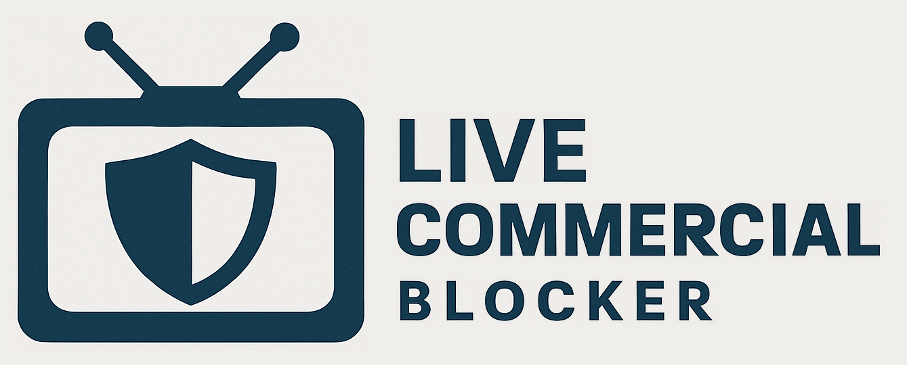

AUTO COMMERCIAL DETECTION MODE
This mode works by the user (you) selecting a specific pixel on a logo/graphic that only displays when your game/program is on. Then, the extension continuously checks to
see if the pixel selected remains the same color when the logo/graphic is displayed. When the color changes, we know this is most likely due to a commercial because the logo/graphic went away and since
commercials are boring, the extension starts playing your YouTube video or whatever over top of the commercial. When the logo/graphic color comes back, we know your game/program is most likely back on,
so the extension pauses/hides your YouTube video or whatever.
QUICK START INSTRUCTIONS
-
Make sure your live game/program is on (out of commercial).
-
If this isn't going to be anytime soon, without selecting a pixel, hit the extension keyboard shortcut now and then again when the game/program is back.
-
Click on a pixel outside this box that is within a non-transparent logo or graphic on your game/program (see Tips & Tricks below for more details).
-
You might need to wait for any video player UI to go away.
-
Refresh the page and then hit the extension keyboard shortcut again if you ever want to chose a different pixel location.
-
Let the extension automatically detect the commercials and display your YouTube videos over top of them.
-
You can also manually display/hide your YouTube video, temporarily disabling the auto-detection, at any point by hitting the extension keyboard shortcut.
TIPS & TRICKS
-
Selecting a Pixel: Automatically detecting commercials across all games/sports/leagues/shows/networks across all streaming platforms isn't an exact science.
What will make your experience the best is selecting the best pixel to monitor that you can.
-
You'll want to prioritize selecting a pixel within the channel logo (e.g. the NBC logo) if it is not completely white/black or semi-transparent.
-
Within the channel logo, you'll want to try to select a color that isn't white or black (e.g. the blue inside the NBC logo). You'll want to aim for as center mass of the color as possible.
-
If the logo is completely white/black or semi-transparent, it is best to exit now, switch the commercial detection mode to "Advanced Logo Analysis" (note: this will require an additional install), refresh this page, and then start again.
-
If there is no consistent channel logo on your broadcast, try to select any color that seems to be the most consistent on a graphic over the game.
-
This is most often some part of the score graphic.
-
Prioritize non-black/non-white colors, then white, then black.
-
If you chose this to be your pixel location, make sure to set your "Color Mismatch Count Threshold" in the advanced settings of the extension settings to a higher number
like 20-45, as many networks hide the score graphic while showing replays, and we don't want to accidentally play a YouTube video over top of a replay.
-
If this instruction box is blocking your desired pixel location,
go into the advanced settings of the extension settings and modify the overlay video width, height, and/or X/Y display, as this is where the overlay video is going to display.
-
If you would like to change your pixel selection location at any point, refresh the page and hit the extension keyboard shortcut.
-
Manual Override: As mentioned above, you can manually override displaying/hiding your YouTube video and temporarily disable the auto commercial detection by hitting the extension keyboard shortcut. You may
need to do this semi-often if your pixel selection is inside a score graphic. This extension also has an option for manual mode, where it doesn't try to automatically detect the commercials at all, you will just need to
hit the extension keyboard shortcut every time a commercial begins or ends. This mode can be set in the extension settings. Regardless of if using automatic or manual mode, if your computer is hooked up to play through your TV,
I highly recommend downloading Touch Portal or Deckboard from the app store on your phone and setting up a shortcut for the extension keyboard shortcut, so you can control this extension on your computer
from your phone.
-
Changing YouTube Videos: You can set what YouTube video, playlist, or live video you want to play over top of the commercials by grabbing the video ID or playlist ID from YouTube and plugging it into the
extension settings while also selecting the overlay video type. This extension also allows some non-YouTube videos and live streams to play over top of commercials (e.g. playing a different YouTubeTV channel overtop of a YouTubeTV channel's commercials).
You can try some out by pasting the full URL of the desired non-YouTube video into the extension settings.
AUTO COMMERCIAL DETECTION MODE [OPPOSITE MODE ENABLED]
[Opposite Mode: This mode works great for streams that don't actually show commercials, but instead display some sort of image or looping video while the program is on commercial break. If you do not wish to be in opposite mode, you can switch to a different Mode of Commercial Detection in the settings of the extension.]
This mode works by the user (you) selecting a specific pixel on an image that only displays when your live game/sport/event/race/program/show is on commercial break. Then, the extension will play your YouTube video while continuously checking to
see if the pixel selected remains the same color. When the color changes, we know this is due the game being back on, so it pauses and hides the YouTube video until the color comes back again.
QUICK START INSTRUCTIONS
-
Make sure your live game/program is on commercial break.
-
If this isn't going to be anytime soon, without selecting a pixel, hit the extension keyboard shortcut now and then again when it is on commercial break.
-
Click on a pixel outside this box that is a consistent color.
-
You might need to wait for any video player UI to go away.
-
Refresh the page and then hit the extension keyboard shortcut again if you ever want to chose a different pixel location.
-
Let the extension automatically detect the commercials and display your YouTube videos over top of them.
-
You can also manually display/hide your YouTube video, temporarily disabling the auto-detection, at any point by hitting the extension keyboard shortcut.
ADVANCED LOGO ANALYSIS MODE
This mode works by the user (you) selecting the full channel logo on the on the broadcast. It then sends images of this logo to the Advanced Logo Analyzer app on your desktop which uses computer vision to detect the edges of the logo. It first builds a mask of this logo's edges and then compares future images of this area to see if the edges match up to the original mask. If the edges don't match up, that means the logo went away, so it is most likely a commercial.
QUICK START INSTRUCTIONS
-
Make sure your live game/program is on (out of commercial).
-
If this isn't going to be anytime soon, without selecting the logo, hit the extension keyboard shortcut now and then again when the game/program is back.
-
Click and drag to frame a box around the channel logo on your broadcast
-
If it is a really big logo, you only need to select a part of it. (e.g. Just select the ESPN part of the ESPN/ABC logo that shows on monday night football on ABC.)
-
Once you finish framing the logo by lifting off your mouse, the extension will automatically start building a mask of the logo's edges
-
Watch as the mask is being built for things that could jeopordize the end result like a stationary edge behind the logo
-
After mask is complete, evaluate the end result and if things seem ok, you are good to relax and enjoy! :)
-
If the mask did not come out alright, refresh and try again. (e.g. There was a stationary tree behing the logo the whole time and it significantly captured the edge of the tree.)
-
Note: Not all the logo's edges need to be captured, just a decent portion of them. It is more important that no not a part of the logo were significantly captured.
-
You can also manually display/hide your overlay video, temporarily disabling the auto-detection, at any point by hitting the extension keyboard shortcut.
TIPS & TRICKS
-
If you are having trouble capturing a decent mask (note: it does not need to be perfect), try pausing the stream while the logo sits in front of a solid background.